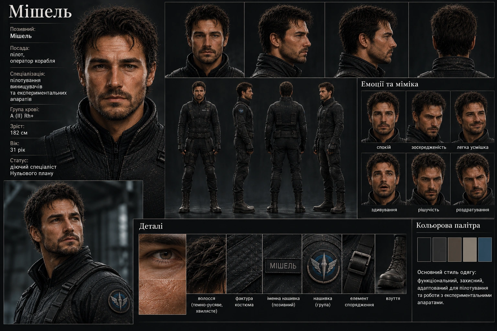

ОСНОВНА ІНФОРМАЦІЯ
Пілот команди Евігіда
Мішель — професійний пілот, який входить до команди Евігіда. Він добре знає корабель, яким працює група, і має багаторічний досвід дій у надзвичайних ситуаціях. У складі команди бере участь у польотах, розвідувальних операціях і випробуваннях невідомої техніки.
Ім’я: Мішель
Позивний: Мішель (за наданим досьє)
Посада: пілот, оператор корабля
Спеціалізація: пілотування винищувачів та експериментальних апаратів (за досьє)
Вік: 31 рік (за наданим візуальним досьє)
Зріст: 182 см (за наданим візуальним досьє)
Група крові: A (II) Rh+ (за наданим візуальним досьє)
Походження: у перевірених уривках не уточнене
РОБОТА В КОМАНДІ
Досвідчений пілот у нестандартних умовах
Кандидатуру Мішеля обрали для експерименту з центральним кріслом керування захопленого інопланетного корабля. Науковці врахували його професіоналізм, знання корабля та досвід роботи в надзвичайних ситуаціях. Попри зрозумілий скепсис щодо ризикованого експерименту, він погодився взяти в ньому участь.
Під час контакту з кораблем Мішель відчув, що система намагається зрозуміти його так само, як він — її. Хоча звичних командних панелей не було, він почав інтуїтивно розпізнавати розташування окремих систем. Це стало важливим кроком у випробуванні та освоєнні незнайомої технології.
РОЛЬ У СЮЖЕТІ ТА ВЗАЄМИНИ
Частина дослідницької команди
Мішель працює разом з Евігідом, Каміль та іншими учасниками експедиції. У польових операціях він підтримує команду як пілот і оператор корабля, оцінює можливості техніки та бере участь у рішеннях щодо безпечного переміщення й евакуації.
У рукописах його взаємодія з Каміль показана в межах спільних завдань на борту: вони обмінюються спостереженнями, обговорюють результати сканування та оцінюють, які знахідки варто доставити на Землю для подальшого дослідження.
Вік, зріст, група крові та зовнішні характеристики на цій сторінці взяті з наданого візуального досьє, а не з рукописного тексту.